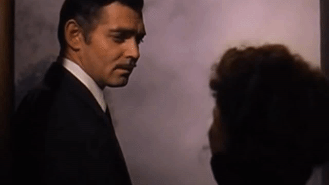
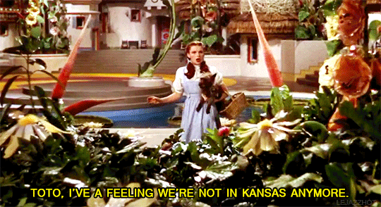
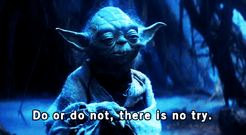
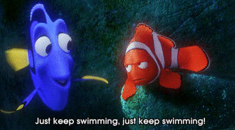
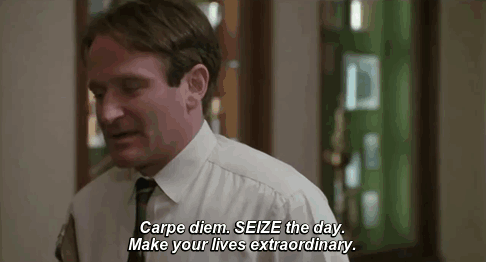

Hello, I'm Marianne De Bonis!

I'm absolutely awkward and fluent in sarcasm.
I have not lost my mind – it’s backed up on my external hard drive somewhere.
I can’t remember who I stole my bio from or why.
Am I crazy or am I so sane that you just blew your mind?
Here are some of my favourite movie quotes
with some quirky CSS tricks
***Hover over the quotes for a surprise***
Frankly, my dear, I don't give a damn.
Gone with the Wind
Toto, I've a feeling we're not in Kansas anymore.
The Wizard of Oz
Do, or do not. There is no “try”.
Star Wars: Episode V – The Empire Strikes Back
Just keep swimming. Just keep swimming. Just keep swimming, swimming, swimming.
Finding Nemo

Carpe diem. Seize the day, boys. Make your lives extraordinary.
Dead Poets Society